◆「Fate/Apocrypha × FGO 特別活動開幕前夕Pick Up召喚(每日交替)」期間◆
期間:2018年4月25日(三) 17:00～5月9日(三) 11:59
舉辦期間限定「Fate/Apocrypha × FGO 特別活動開幕前夕Pick Up召喚(每日交替)」！
本次是在「Fate/Apocrypha」活躍的一部份Servant做為Pick Up對象的「黑之陣營Pick Up召喚(每日交替)」「赤之陣營Pick Up召喚(每日交替)」2種類的召喚舉辦。
在「黑之陣營Pick Up召喚(每日交替)」及「赤之陣營Pick Up召喚(每日交替)」對象★5(SSR)Servant以每日交替Pick Up，★4(SR)Servant常駐Pick Up。
◆「黑之陣營Pick Up召喚(每日交替)」舉辦期間◆
期間:2018年4月25日(三) 17:00～5月9日(三) 11:59
◆「赤之陣營Pick Up召喚(每日交替)」舉辦期間◆
期間:2018年4月25日(三) 17:00～5月9日(三) 11:59
※在「黑之陣營Pick Up召喚(每日交替)」Pick Up的所有Servant不會在「赤之陣營Pick Up召喚(每日交替)」被抽出。
另外，在「赤之陣營Pick Up召喚(每日交替)」Pick Up的所有Servant不會在「黑之陣營Pick Up召喚(每日交替)」被抽出。
※賽米拉米斯、天草四郎在Pick Up期間結束後不會追加到故事召喚。
※莫德雷德(Saber)、迦爾納、開膛手傑克、弗拉德三世(Berserker)、貞德(Ruler)、齊格飛、阿塔蘭塔(Archer)、阿斯托爾福、弗蘭肯斯坦(Berserker)在Pick Up期間結束後仍會在故事召喚被抽出。
詳情請在聖晶石召喚畫面左下的召喚詳細確認。
Pick Up期間中，期間限定Servant、Pick UpServant的出現機率提升！
10次召喚中確定1張★4(SR)以上和確定1位★3(R)以上的Servant！
※確定★4(SR)以上包含Servant和概念禮裝。
◆「黑之陣營Pick Up召喚」每日交替Pick Up內容◆
| 每日交替Pick Up期間 | 每日交替Pick Up內容 |
|---|---|
| 4月25日(三) 17:00～22:59 | 開膛手傑克 貞德(Ruler) |
| 4月25日(三) 23:00～4月26日(四) 22:59 | 弗拉德三世(Berserker) 貞德(Ruler) |
| 4月26日(四) 23:00～4月27日(五) 22:59 | 開膛手傑克 弗拉德三世(Berserker) |
| 4月27日(五) 23:00～4月28日(六) 22:59 | 開膛手傑克 貞德(Ruler) |
| 4月28日(六) 23:00～4月29日(日) 22:59 | 弗拉德三世(Berserker) 貞德(Ruler) |
| 4月29日(日) 23:00～4月30日(一) 22:59 | 開膛手傑克 弗拉德三世(Berserker) |
| 4月30日(一) 23:00～5月1日(二) 22:59 | 開膛手傑克 貞德(Ruler) |
| 5月1日(二) 23:00～5月2日(三) 22:59 | 弗拉德三世(Berserker) 貞德(Ruler) |
| 5月2日(三) 23:00～5月3日(四) 22:59 | 開膛手傑克 弗拉德三世(Berserker) |
| 5月3日(四) 23:00～5月4日(五) 22:59 | 貞德(Ruler) |
| 5月4日(五) 23:00～5月5日(六) 22:59 | 弗拉德三世(Berserker) |
| 5月5日(六) 23:00～5月6日(日) 22:59 | 開膛手傑克 |
| 5月6日(日) 23:00～5月7日(一) 22:59 | 貞德(Ruler) |
| 5月7日(一) 23:00～5月8日(二) 22:59 | 弗拉德三世(Berserker) |
| 5月8日(二) 23:00～5月9日(三) 11:59 | 開膛手傑克 |
※請注意會以每日交替變更Pick Up的Servant。
◆「黑之陣營Pick Up召喚」常駐Pick Up內容◆
| 常駐Pick Up期間 | 常駐Pick Up內容 |
|---|---|
| 4月25日(三) 17:00～ 5月9日(三) 11:59 |
齊格飛 阿斯托爾福 弗蘭肯斯坦(Berserker) |
◆「赤之陣營Pick Up召喚」每日交替Pick Up內容◆
| 每日交替Pick Up期間 | 每日交替Pick Up內容 |
|---|---|
| 4月25日(三) 17:00～ 4月26日(四) 22:59 |
天草四郎 |
| 4月26日(四) 23:00～ 4月28日(六) 22:59 |
賽米拉米斯 |
| 4月28日(六) 23:00～ 4月30日(一) 22:59 |
迦爾納 |
| 4月30日(一) 23:00～ 5月3日(四) 22:59 |
莫德雷德(Saber) |
| 5月3日(四) 23:00～ 5月5日(六) 22:59 |
賽米拉米斯 天草四郎 |
| 5月5日(六) 23:00～5月6日(日) 22:59 | 迦爾納 天草四郎 |
| 5月6日(日) 23:00～22:59 | 迦爾納 賽米拉米斯 |
| 5月7日(一) 23:00～5月8日(二) 22:59 | 莫德雷德(Saber) 天草四郎 |
| 5月8日(二) 23:00～5月9日(三) 11:59 | 莫德雷德(Saber) 賽米拉米斯 |
※請注意會以每日交替變更Pick Up的Servant。
◆「赤之陣營Pick Up召喚」常駐Pick Up內容◆
| 常駐Pick Up期間 | 常駐Pick Up內容 |
|---|---|
| 4月25日(三) 17:00～ 5月9日(三) 11:59 |
阿塔蘭塔(Archer) |

在「Fate/Apocrypha」活躍的齊格飛、阿塔蘭塔(Archer)戰鬥動作及寶具演出翻新！
另外，在「Fate/Grand Order」官方網站內的公告中，公開了「★4(SR)齊格飛」及「★4(SR)阿塔蘭塔(Archer)」的寶具演出。敬請確認。
◆翻新時間◆
2018年4月25日(三) 17:00～
【齊格飛】

【阿塔蘭塔(Archer)】


【2018年4月30日(一) 23:00追記】
在「Fate/Apocrypha」活躍的莫德雷德(Saber)戰鬥動作及寶具演出翻新！
另外，在「Fate/Grand Order」官方網站內的公告中，公開了「★5(SSR)莫德雷德(Saber)」的寶具演出。敬請確認。
◆翻新時間◆
2018年4月30日(一) 23:00～


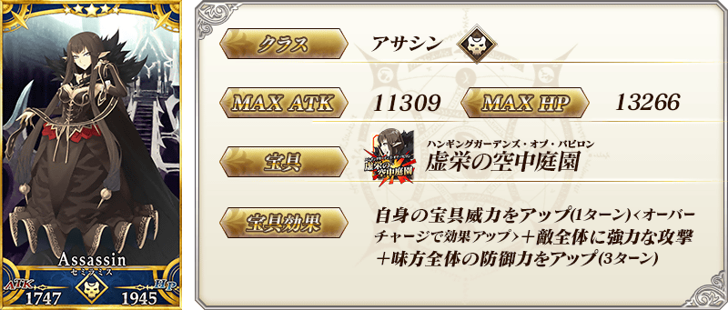
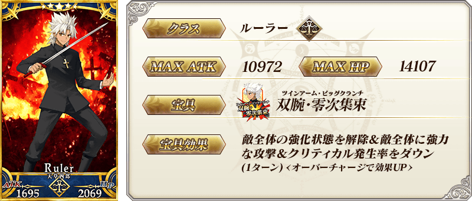
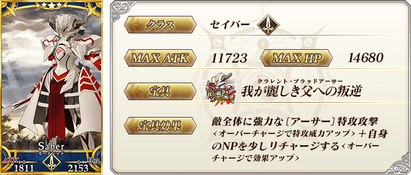
※4/30(一) 23:00圖片修正

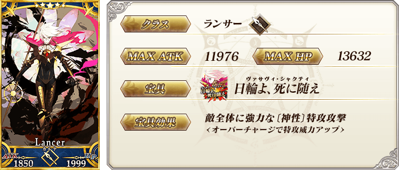

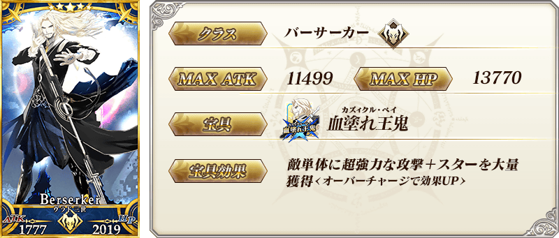
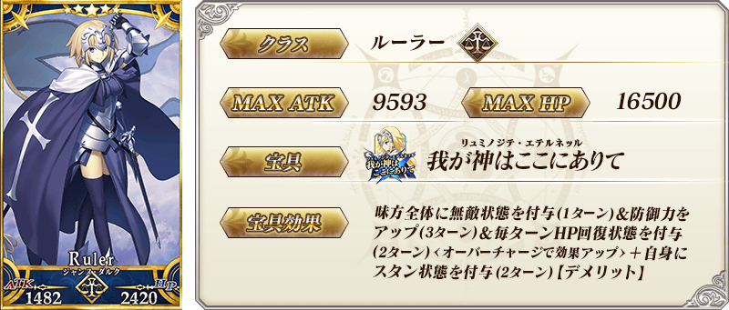
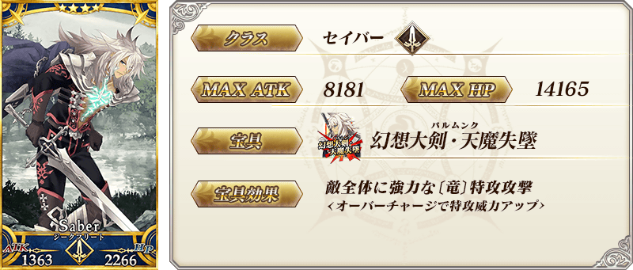
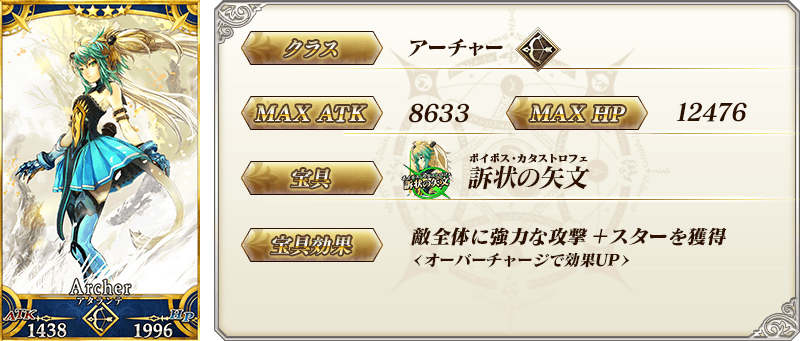

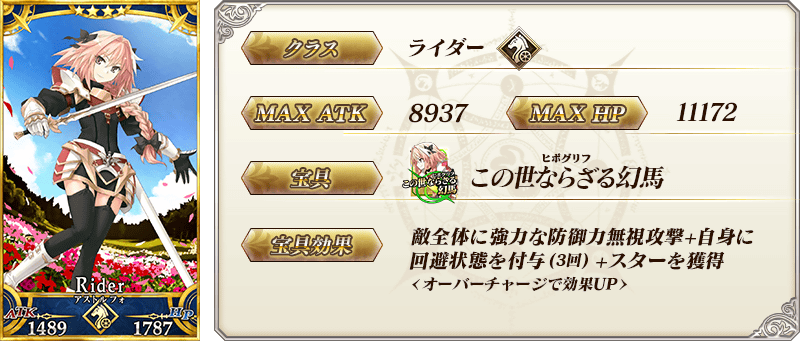
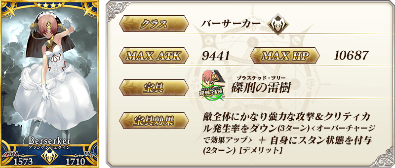
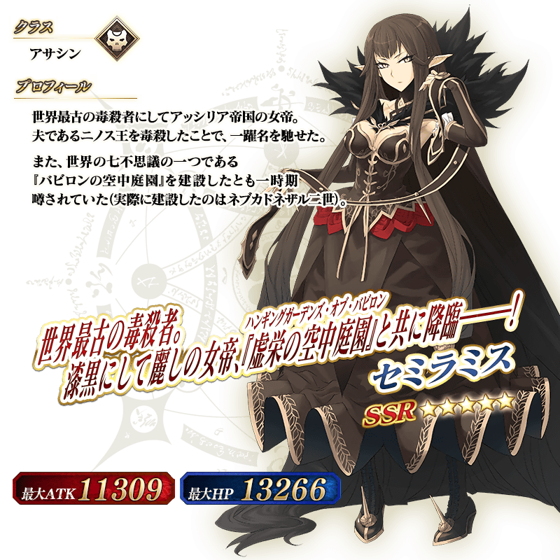
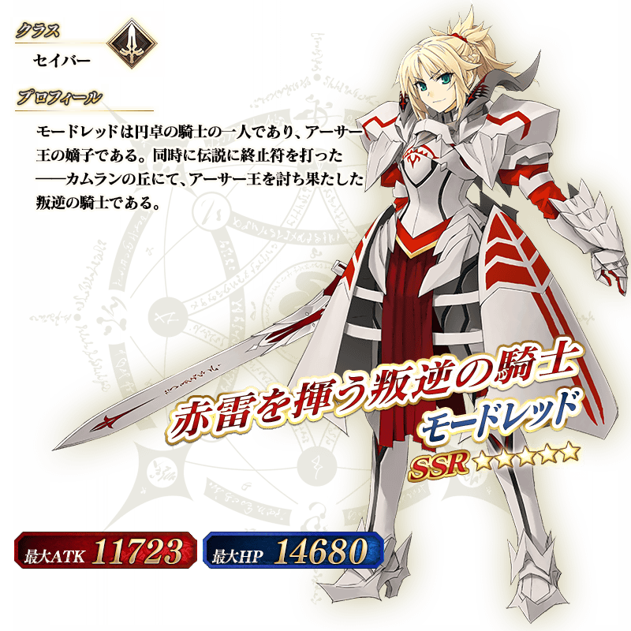

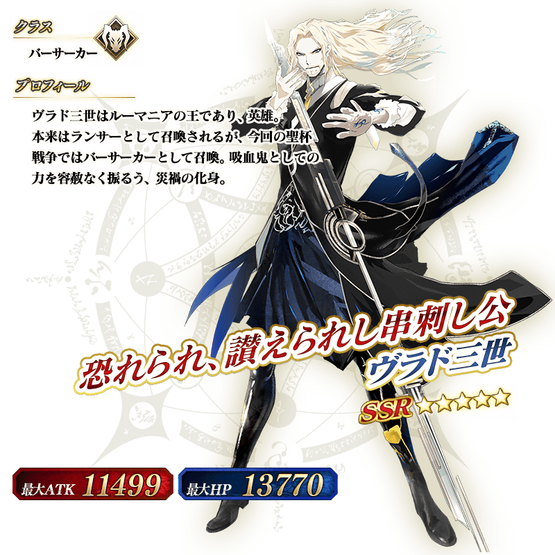
介紹莫德雷德(Saber)、迦爾納、開膛手傑克、賽米拉米斯、弗拉德三世(Berserker)、天草四郎、貞德(Ruler)的寶具演出。
在「Fate/Grand Order」官方網站內的公告中，公開了「★5(SSR)莫德雷德(Saber)」「★5(SSR)迦爾納」「★5(SSR)開膛手傑克」「★5(SSR)賽米拉米斯」「★5(SSR)弗拉德三世(Berserker)」「★5(SSR)天草四郎」「★5(SSR)貞德(Ruler)」的寶具演出。敬請確認。
關於在「Fate/Apocrypha」登場Servant的強化大成功、極大成功率期間限定2倍等，「Fate/Apocrypha × FGO 特別活動開幕前夕宣傳活動」的詳情請至下述橫幅確認。